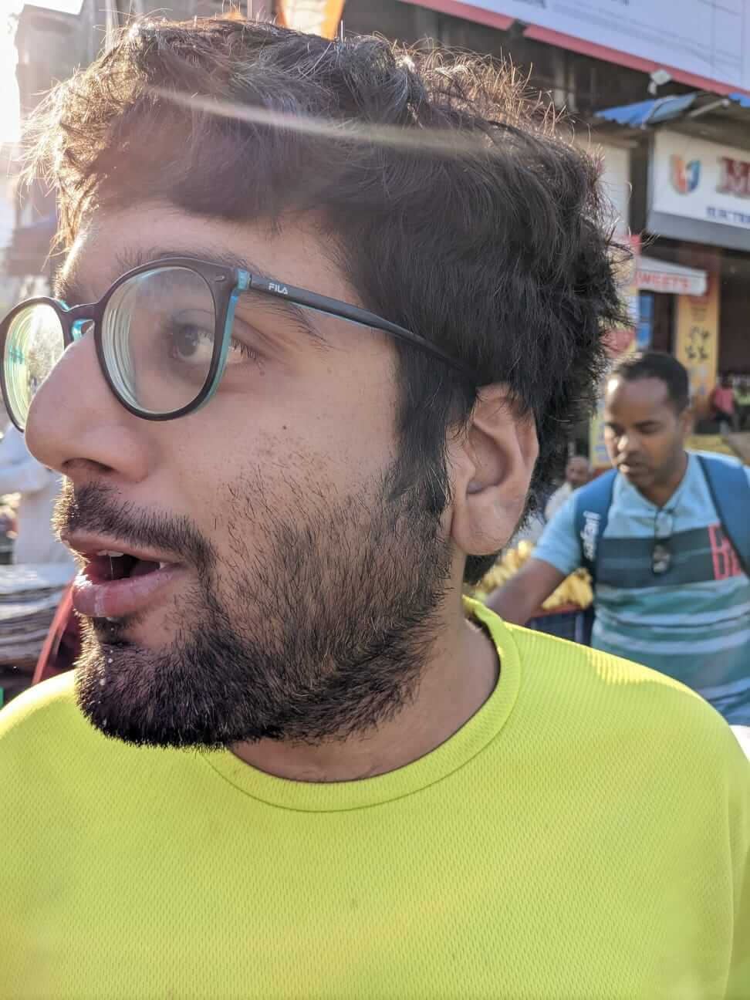
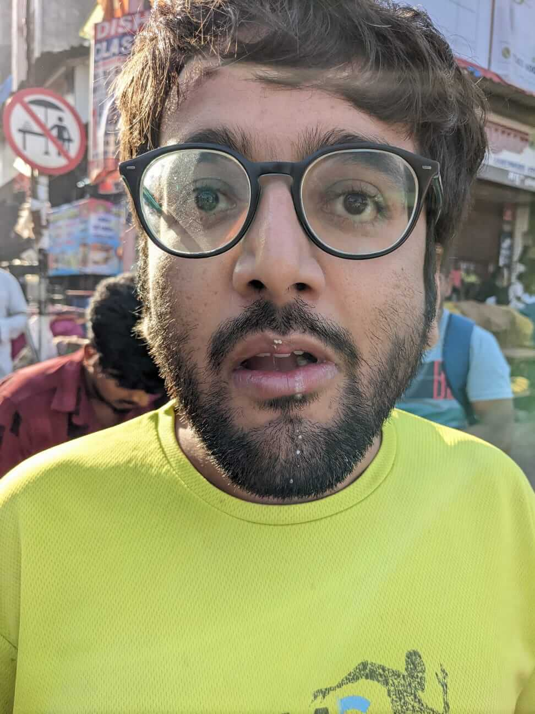
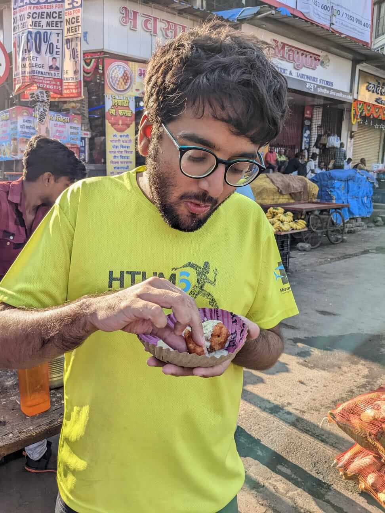
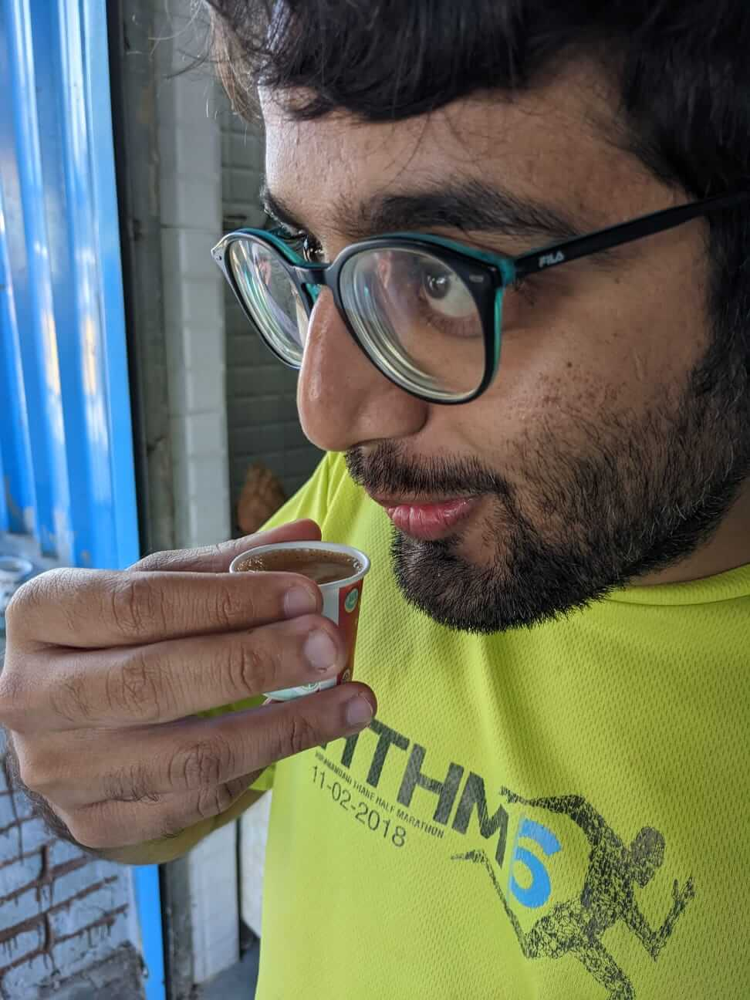
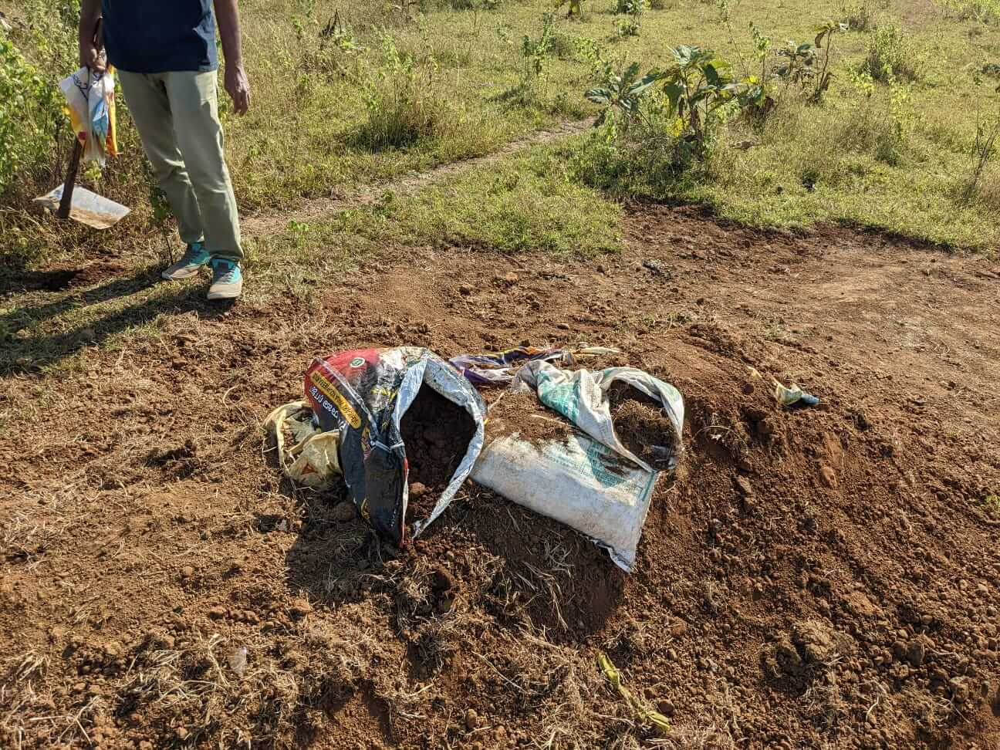
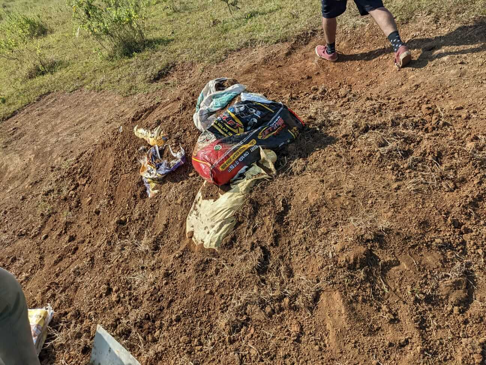

2022-11-02
30th October 2022:
I Met Savio at Ambernath station only for him to tell me he was hungry, then Hitesh joined as well. Street Mendu wada was destroyed. RIP Mendyu Wada and both Savio’s and Hitesh’s digestive systems.




We reached the trail to find out that the jump was broken:


This was not a satisfaction of curiosity. It was an intentional destruction of the jump. On Thursday, Sri sent us a picture with only one goni removed from the structure. That was curiosity or at least passed as a curiosity. Upon seeing that I calmly and rationally, gave up on this location for MTB as the gradient is not steep enough to be a natural trail. We took out stuff and left. We went to Hitesh’s place. Not having his parent’s home is rare and we leveraged that. The last time we spent time at McD was not worth the time, so I decided to experiment today. It was conscious. Once in a long while kinda thing.
We discussed various economic systems, and how Hitesh will go on about NZ and Canada’s economy but he wants to go to a country that can’t seem to keep a president and suffers from high inflation. We also discussed SB dunks Why so sad and the sneaker flipping business, which Hitesh and I are now partnering in. Hopefully, Hitesh’s card works this time, and hopefully, we don’t lose money.
We reached his house to know despite how much ever he shits on me for being privileged yet acting broke (I am), the asshole lives in a big house. His MTB has a whole room to itself. Match that. There we discussed KC’s competence (or lack thereof), and how the Kalyan DH MTB community is fragmented now, this year’s Rayate Race. We also find out that both Savio and I type at around 40wpm - the average, but Hitesh types at roughly 80 wpm, putting him in the top 5 percentile globally. He was glad to finally find something he’s better than me at - his words, not mine. I think Hitesh was disappointed I don’t take dates to Carter Road for a long romantic walk. But its safe to say he realizes reading poems to each other is more romantic,
Both Hitesh and I praised kindles and how shitty smartphones are for reading. Gave my kindle to Savio then, and throughout the train back home. Safe to say, he is a convert as well. Hitesh demands one more emotional paragraph. I will give you one line.
They asked me if I loved her to death. I said, “Speak of her over my grave and watch me come back to life.”
That’s all you get brother ;)
We left his place at 3. And had to get off the train back home and go back to Ulhasnagar station to get my laptop and cable that I then forgot at Hitesh’s. I amended some blog articles and spruced up the theme (link in bio). Tool the metro from Ghatkopar to Andheri. This must have saved me 15 mins due to the long lines for the ticket. Next time I will stick to using the train due to the greater amount of downtime in which I can work or read, despite the longer total time traveling. Also, the metro train has Bisleri and LIC, and vivo in front of the station names. That was surprising. Capitalism 100. Savio also told me people have missed their stops for all the corporate pre-fixes thinking their destination is different. That was interesting.
Overall, going to Hitesh’s place was not an experience or decision I regret, I would however know that ultimately, I value getting the extra sleep I get when I come home at 4 instead of 7, more than non-on-trail-socializing. As the Ambernath trail is basically no more for me, we’ve decided on riding at our old spot in Mainland Mumbai. It is close to me so that is great. We will also alternate to Kharghar, Panvel (@ and @ let us know), and monthly Pashan trips. Or at least, that is the plan. We go to Pashan on 13th Nov for a day trip. Anyone who wants to join, let us know.
flying kisses